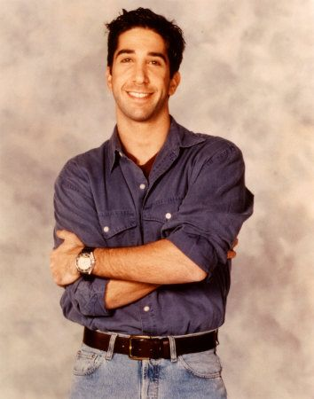

Aunque en general tiene un carácter dulce, es a menudo socialmente torpe. Ross a veces es mostrado por
tener un buen sentido del humor. Es el único miembro del grupo de amigos con un doctorado, y, puede ser
arrogante. En la mayoría de los casos su arrogancia le hace fracasar o saca lo mejor de él. En
temporadas posteriores, Ross es mostrado por ser muy irritable, a menudo estallando de rabia por cosas
sin importancia. Por ejemplo, en "The One With Ross's Sandwich", Ross es obligado a tomar un año
sabático después de gritarle a su jefe por comerse su sándwich.
Ross sale con un número considerable de mujeres a través de la serie. La mayoría de las citas fueron
interrumpidas o completamente arruinadas por su paranoia o por ser cretino. Su matrimonio sin éxito con
Carol también es una fuente de la inseguridad feroz de Ross. Monica dice que antes de que Carol dejara a
Ross él nunca estuvo celoso, aunque era obvio para todos excepto para él que todas sus novias anteriores
lo engañaron.